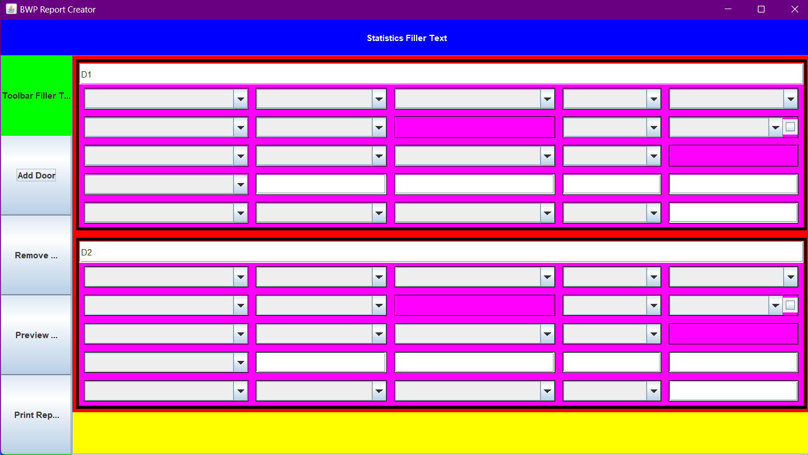

BWP-Report-Creator
Written for BWP Architects Ltd
This project was written to be an application to help produce door schedule reports. It was built using the Java Swing framework to create the GUI. Previously, these reports were produced as a very long spreadsheet which were hard to write and even harder to read. The aim with this porject was to make this process much easier.

During development